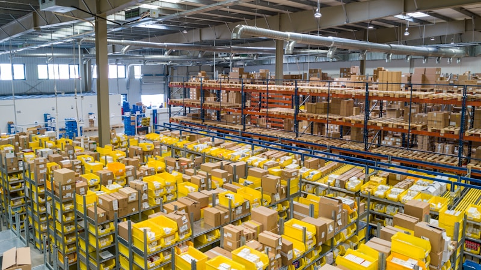

동남아, 미중 공급망 압박에 양자택일 기로

동남아시아는 현재 글로벌 공급망 재편의 최전선이다. 베트남은 2023년 대미 수출 1,097억 달러, 대중 수입 1,374억 달러를 기록하며 '양다리 수혜국'으로 분류돼 왔으나, 미국의 반도체·배터리 공급망 인증 요건이 강화되면서 중국 의존 부품의 비중을 점진적으로 줄여야 하는 압력을 받고 있다.
말레이시아는 반도체 패키징·테스트 분야에서 전 세계 시장의 약 13%를 담당하며, 인텔·인피니언·NXP 등 글로벌 팹리스의 후공정 허브 역할을 해왔다. 그러나 중국계 자본이 말레이시아 반도체 기업 지분을 확대하자, 미국 상무부가 말레이시아산 반도체에 대한 우회 수출 여부 감시를 강화하고 있다고 Lowy Institute가 분석했다.
인도네시아는 니켈 매장량 세계 1위(약 2,100만 톤)를 무기로 전기차 배터리 공급망의 핵심 노드를 자처하고 있다. 2024년 현재 중국 CATL·화유코발트와 한국 포스코·LG에너지솔루션이 모두 인도네시아에 생산기지를 운영 중이며, 미국 IRA(인플레이션 감축법)의 '우려 외국 기업(FEOC)' 조항이 중국계 현지 공장에 적용될 경우 한국 기업의 공급망 재설계가 불가피하다.
Pax Silica 정상회의(워싱턴, 2025년 개최)에서 한국은 AI 공급망 협의 테이블에 참여해 반도체·소재 분야 협력 의제를 논의했다. 이 회의에서 동남아 국가들은 공급망 중립국 지위 유지를 요구했으나, 미국은 CHIPS 동맹국 인증 기준 강화 방침을 재확인했다. 한국 입장에서 동남아는 우회 공급망 거점이자 경쟁 생산기지라는 이중적 성격을 갖는다.
동남아의 공급망 선택 압박은 한국 제조업에 '경쟁 심화'와 '분업 기회' 두 가지 시나리오를 동시에 던진다. 베트남·말레이시아가 미국 인증 공급망으로 편입될수록 한국산 중간재·소재의 수요처가 확장될 수 있으나, 이들이 독자적 첨단 제조 역량을 확보하면 한국 후공정 산업과의 직접 경쟁이 불가피해진다.
IRA FEOC 조항 적용 범위가 2026년부터 본격 확대되면, 인도네시아 내 중국계 합작 배터리 공장에서 생산된 소재를 사용하는 한국 배터리 3사(LG에너지솔루션·삼성SDI·SK온)의 보조금 수급 자격이 위협받을 수 있다. 이에 따른 공급망 재편 비용은 업계 추산 기준 배터리 셀당 20~30달러 수준으로 추정된다.
카네기 국제평화재단 보고서('Governing AI in the Shadow of Giants')는 한국이 AI 공급망에서 '반도체 제조 + 데이터 인프라' 역할을 동시에 수행할 수 있는 몇 안 되는 중견국임을 명시했다. 동남아가 미중 양 진영의 하청 기지로 분화될 경우, 한국은 고부가 소재·장비 공급국으로서의 포지션을 선점해야 한다.
한국 소재·장비 기업들이 1차 수혜자다. 동남아가 중국산 부품을 대체하는 과정에서 반도체 공정 소재(포토레지스트·고순도 불화수소 등)와 배터리 양극재의 한국산 수요가 증가할 수 있다. 이미 SK머티리얼즈·솔브레인·에코프로비엠은 베트남·말레이시아 고객사 확대를 위한 기술 인증 절차를 진행 중이다.
포스코홀딩스와 POSCO퓨처엠은 인도네시아 니켈 제련 합작(PT HPAL)을 통해 FEOC 비해당 리튬 공급망 구축을 가속화하고 있다. IRA 적합 공급망 인증을 받을 경우 미국 완성차 배터리 납품에서 중국계 경쟁사 대비 결정적 우위를 확보할 수 있다.
중국계 자본이 지배하는 동남아 배터리 소재 합작사들이 가장 큰 타격을 받을 전망이다. CATL·화유코발트의 인도네시아·말레이시아 합작법인이 FEOC 지정 시 미국·유럽 완성차 공급망에서 즉시 배제된다. 이는 한국 배터리 3사에는 단기적으로 반사이익이나, 자체 공급망 재편 비용도 동반 상승한다.
동남아 후공정(패키징·테스트) 업체들이 미국 우회 수출 감시 강화로 성장 모멘텀이 약화될 수 있다. 말레이시아 반도체 산업(GDP 기여 약 8%)은 미국 규제 강화 시 투자 유치 둔화가 불가피하며, 이는 한국 장비·소재 기업의 수출 수요에도 간접 영향을 미친다.
한국 배터리·반도체 기업 투자자는 IRA FEOC 조항 적용 일정(2026년 확대 시행)을 핵심 변수로 설정해야 한다. LG에너지솔루션·삼성SDI·SK온의 인도네시아 합작 구조가 FEOC 비해당 판정을 받는지 여부를 분기별 공시와 미국 에너지부 가이던스를 통해 추적해야 한다.
동남아 공급망 재편의 수혜 구간은 소재·장비 업스트림에 집중된다. 포스코퓨처엠·에코프로비엠 등 IRA 적합 공급망 구축 진도율이 높은 양극재 기업, 그리고 말레이시아·베트남 고객사 다변화가 진행 중인 반도체 소재 기업을 중기 관심 종목으로 분류할 것을 권고한다.
실제 조달 현장에서는 — 베트남·말레이시아 현지 바이어들이 '미국 인증 공급망' 여부를 납품 계약 선결 조건으로 요구하는 사례가 2024년 하반기부터 급증했다. 국내 소재 기업 담당자들은 'FEOC 비해당 확인서' 발급에만 평균 4~6개월이 소요된다고 밝히고 있어, 인증 취득 선행 기업과 후발 기업 간 수주 격차가 이미 벌어지고 있다. 인증 진도율을 확인하는 것이 투자 판단의 핵심 체크포인트다.
이 포스팅은 쿠팡 파트너스 활동의 일환으로 수수료를 제공받습니다.